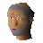

Abbot Langley

| Config name | abbot_langley |
| NPC id | 801 |
| Combat level | hidden |
| Hitpoints | 15 |
| Attack / Strength / Defence | 2 / 2 / 3 |
| Options | Talk-to |
| Wander range | 3 tiles from spawn |
| Max range | 7 tiles from spawn |
| Area folder | monastery |
| Defined in | scripts/areas/monastery/configs/prayer_guild.npc |
Abbot Langley
A holy man.
Show all 1 spawn on the world map → Open in knowledge graph →
Drops
No drops recorded.
Locations
| Area | Coordinates | Level | Count | Map |
|---|---|---|---|---|
| Monastery | 3058, 3484 | 0 | 1 | view |
Dialogue
Abbot LangleyCongratulations, traveller!
Abbot LangleyGreetings traveller.
PlayerCan you heal me? I'm injured.
Abbot LangleyOk.
places his hands on your head. You feel a little better.
PlayerHow do I get further into the monastery?
Abbot LangleyI'm sorry but only members of our order are allowed in the second level of the monastery.
PlayerOh, sorry.
PlayerWell can I join your order?
Abbot LangleyNo. I am sorry, but I feel you are not devout enough.
Abbot LangleyOk, I see you are someone suitable for our order. You may join.
Referenced in scripts
scripts/areas/monastery/scripts/abbot_langley.rs2scripts/areas/monastery/scripts/prayer_guild.rs2